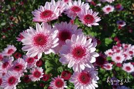
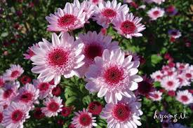
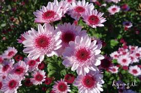
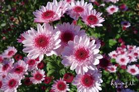
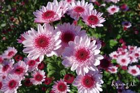

속성 메서드
attr('title', 'korea') : 모든 이미지의 title 속성값을 korea로 설정한다.

속성 메서드
attr('title', function(){ return 값; }) : 모든 이미지의 title 속성값을 각각의 이름으로 설정한다.
function에서 수행된 결과값을 리턴하여 이미지의 title 속성값을 리턴된 값으로 설정한다.


 


